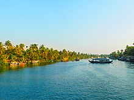

The state is wedged between the Lakshadweep Sea and the Western Ghats. Lying between northern latitudes 8°18' and 12°48' and eastern longitudes 74°52' and 77°22', Kerala experiences humid tropical rainforest climate with some cyclones. The state has a coast of 590 km (370 mi) and the width of the state varies between 11 and 121 kilometres (7 and 75 mi). Geographically, Kerala can be divided into three climatically distinct regions: the eastern highlands; rugged and cool mountainous terrain, the central mid-lands; rolling hills, and the western lowlands; coastal plains.Pre-Cambrian and Pleistocene geological formations compose the bulk of Kerala's terrain. A catastrophic flood in Kerala in 1341 CE drastically modified its terrain and consequently affected its history; it also created a natural harbour for spice transport. The eastern region of Kerala consists of high mountains, gorges and deep-cut valleys immediately west of the Western Ghats' rain shadow. 41 of Kerala's west-flowing rivers, and 3 of its east-flowing ones originate in this region. The Western Ghats form a wall of mountains interrupted only near Palakkad; hence also known Palghat, where the Palakkad Gap breaks. The Western Ghats rise on average to 1,500 metres (4,900 feet) above sea level, while the highest peaks reach around 2,500 metres (8,200 feet). Anamudi in the Idukki district is the highest peak in south India, is at an elevation of 2,695 m (8,842 ft). The Western Ghats mountain chain is recognised as one of the world's eight "hottest hotspots" of biological diversity and is listed among UNESCO World Heritage Sites. The chain's forests are considered to be older than the Himalaya mountains. The Athirappilly Falls, which is situated on the background of Western Ghat mountain ranges, is also known as The Niagara of India. It is located in the Chalakudy River and is the largest waterfall in the state. Wayanad is the sole Plateau in Kerala. The eastern regions in the districts of Wayanad, Malappuram (Chaliyar valley at Nilambur), and Palakkad (Attappadi Valley), which together form parts of the Nilgiri Biosphere Reserve and a continuation of the Mysore Plateau, are known for natural Gold fields, along with the adjoining districts of Karnataka.
Anamudi in the Idukki district is the highest peak in south India, is at an elevation of 2,695 m (8,842 ft). The Western Ghats mountain chain is recognised as one of the world's eight "hottest hotspots" of biological diversity and is listed among UNESCO World Heritage Sites. The chain's forests are considered to be older than the Himalaya mountains. The Athirappilly Falls, which is situated on the background of Western Ghat mountain ranges, is also known as The Niagara of India. It is located in the Chalakudy River and is the largest waterfall in the state. Wayanad is the sole Plateau in Kerala. The eastern regions in the districts of Wayanad, Malappuram (Chaliyar valley at Nilambur), and Palakkad (Attappadi Valley), which together form parts of the Nilgiri Biosphere Reserve and a continuation of the Mysore Plateau, are known for natural Gold fields, along with the adjoining districts of Karnataka.
Kerala's western coastal belt is relatively flat compared to the eastern region, and is criss-crossed by a network of interconnected brackish canals, lakes, estuaries, and rivers known as the Kerala Backwaters. Kuttanad, also known as The Rice Bowl of Kerala, has the lowest altitude in India, and is also one of the few places in world where cultivation takes place below sea level.The country's longest lake Vembanad dominates the backwaters; it lies between Alappuzha and Kochi and is about 200 km2 (77 sq mi) in area. Around eight percent of India's waterways are found in Kerala. Kerala's 44 rivers include the Periyar; 244 kilometres (152 mi), Bharathapuzha; 209 kilometres (130 mi), Pamba; 176 kilometres (109 mi), Chaliyar; 169 kilometres (105 mi), Kadalundipuzha; 130 kilometres (81 mi), Chalakudipuzha; 130 kilometres (81 mi), Valapattanam; 129 kilometres (80 mi) and the Achankovil River; 128 kilometres (80 mi). The average length of the rivers is 64 kilometres (40 mi). Many of the rivers are small and entirely fed by monsoon rain. As Kerala's rivers are small and lacking in delta, they are more prone to environmental effects. The rivers face problems such as sand mining and pollution. The state experiences several natural hazards like landslides, floods and droughts. The state was also affected by the 2004 Indian Ocean tsunami, and in 2018 received the worst flooding in nearly a century.